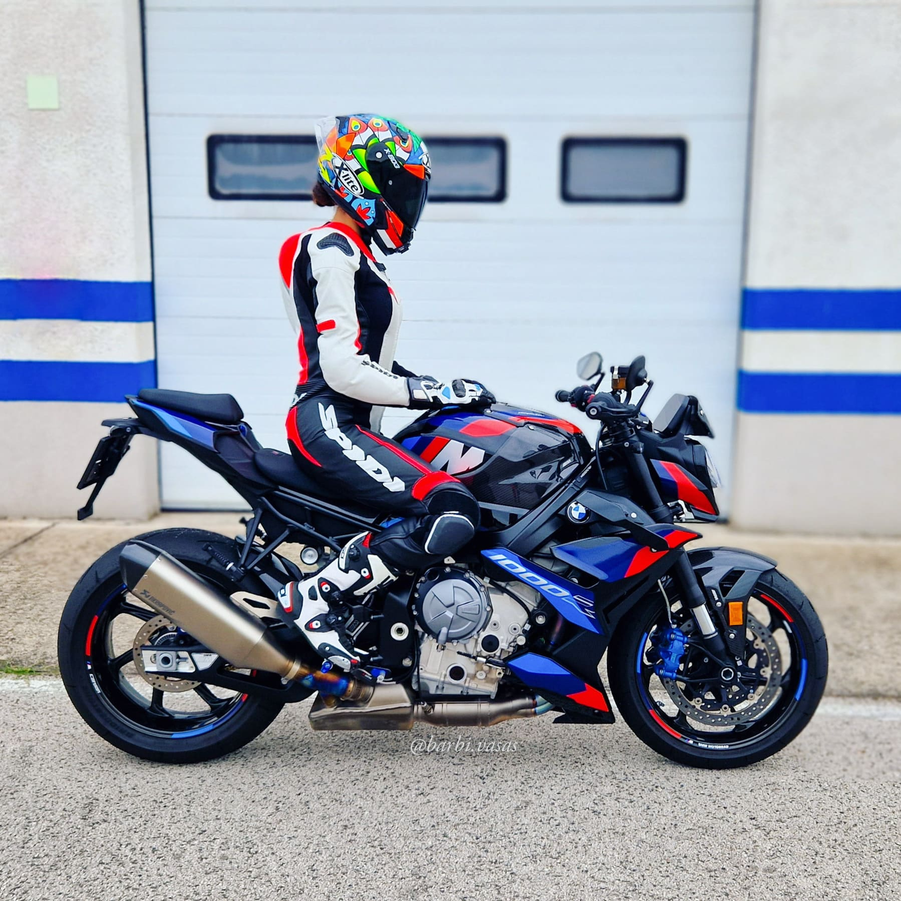
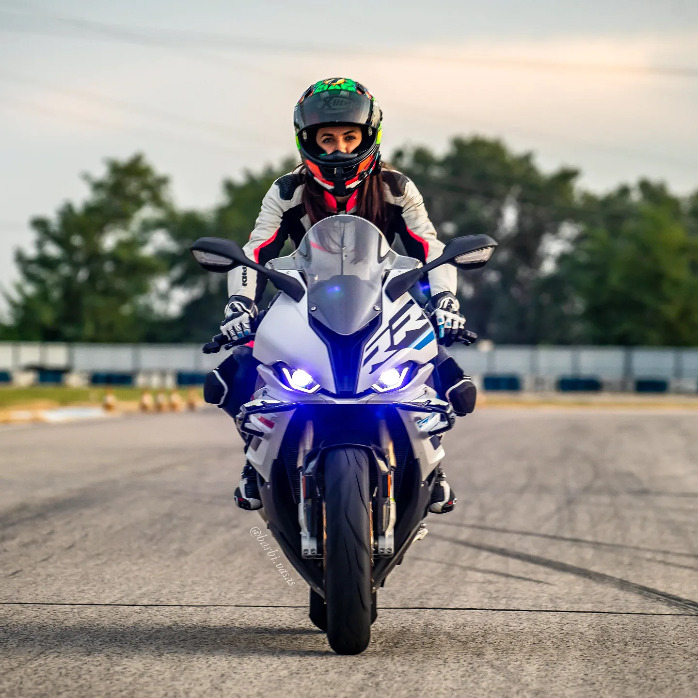
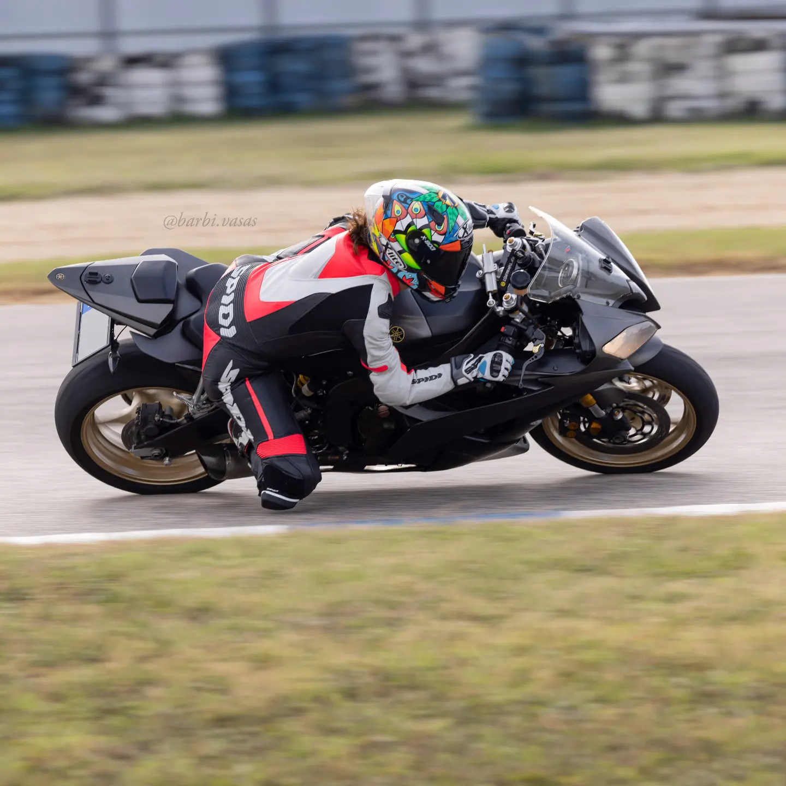

❮
❯
Testing motorbikes and sharing our adventures on YouTube
Sziasztok! Barbi vagyok, Talmácsi Gábor edzője és mentora.Na jó, még nem érkezett meg a felkérés, de valószínű csak azért, mert fél megszólítani.Egész gyerekkoromban arról álmodtam, hogy motorozzak, de a tanulmányaim, az anyagiak és a kishitűek véleménye miatt nehéz volt ezt megvalósítani.Végül összegyűjtöttem a bátorságomat és belevágtam, bárki bármit mondott, mert ez vagyok ÉN.Sajnos azzal szembesültem, hogy a legpozitívabb megjegyzés egy motoros lányra az, hogy "de cuki". Éppen ezért igyekszem ezt a nézetet megcáfolni,és a többi csajszit is arra ösztönözni, hogy ne engedjenek a sztereotípiáknak, és mutassák meg, mire is vagyunk képesek.A sportmotorok a gyengéim, ezért kezdtem el versenypályán motorozni, és ez az, ami azóta is kiegészít igazán.Mivel szeretem a szép képeket, kreáltam egy insta profilt: természetesen csak azért, hogy irigyeim legyenek, hamár mindenki úgy gondolja, csak pózer picsa vagyok.Magam sem tudom miért, egész népszerű lett, ezért egyre több lehetőség csöppent elém, úgy mint a tesztelésre való felkérés: a tapasztalatok megosztása női szempontból.Kellett hozzá egy-két ajtócsapkodás, hogy Danit is kamera elé állítsam, de vegül itt vagyunk, csináljuk, amíg kedvünk van hozzá.